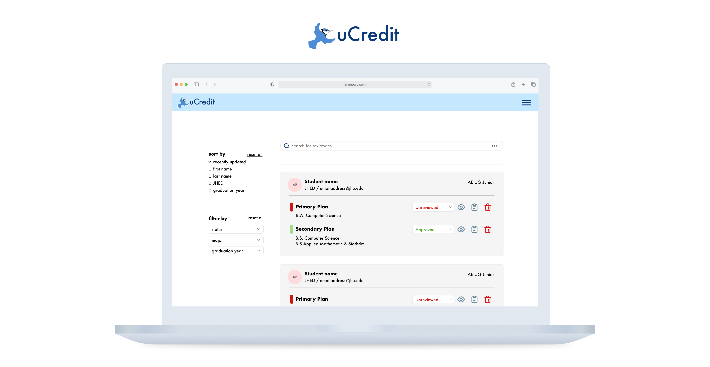
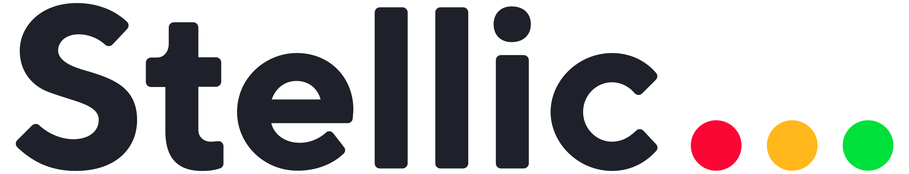
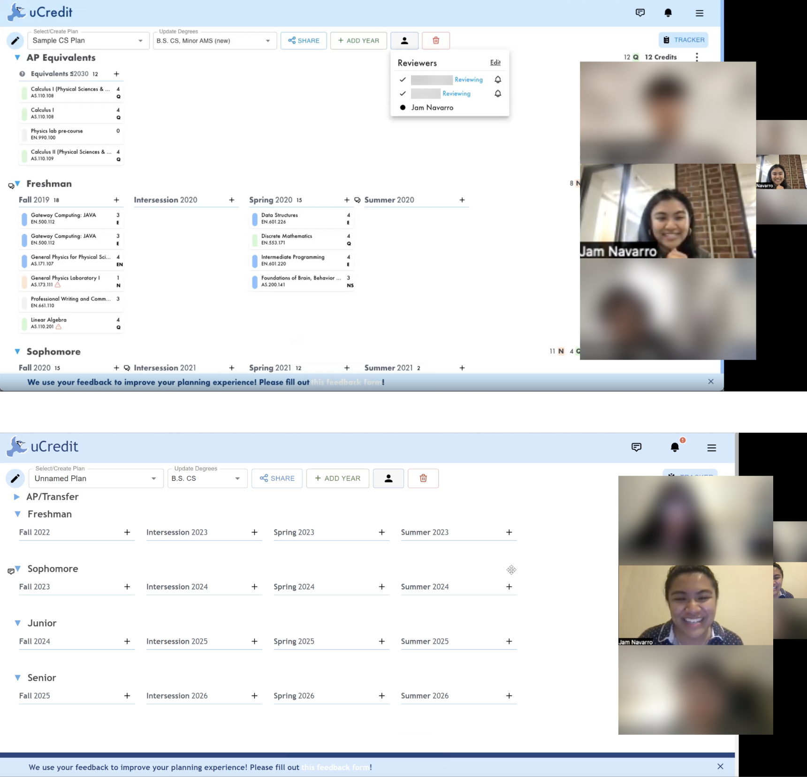
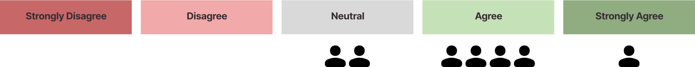
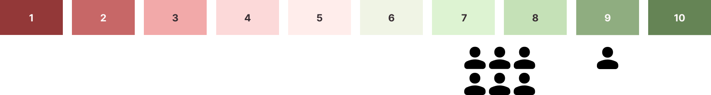
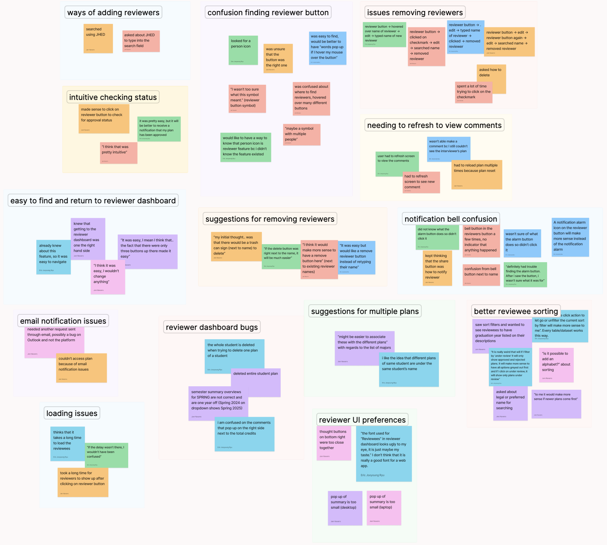
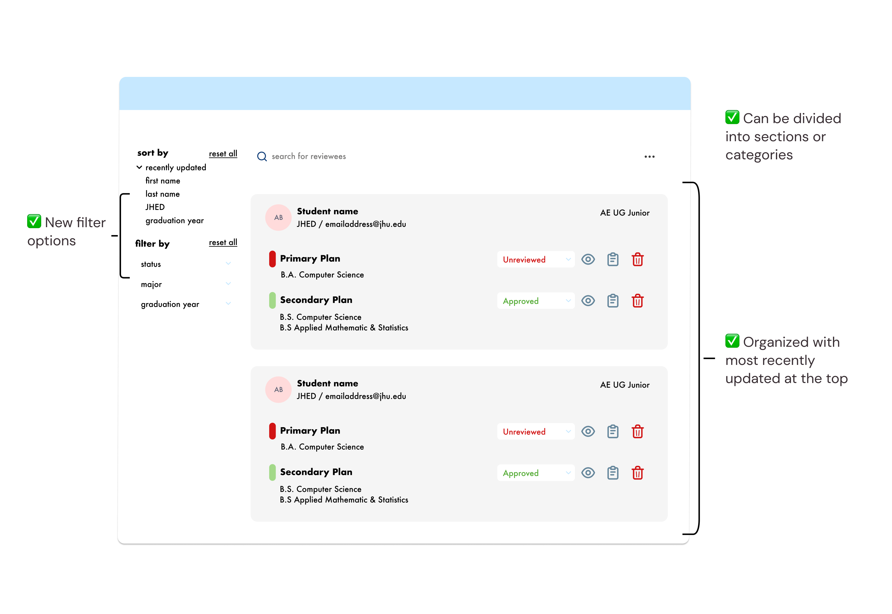
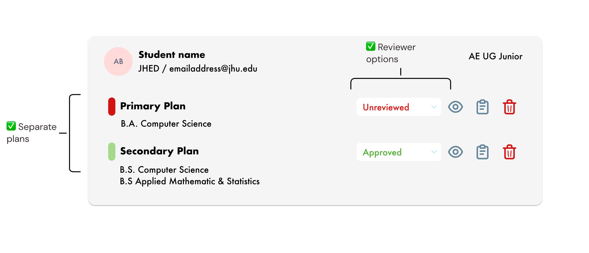
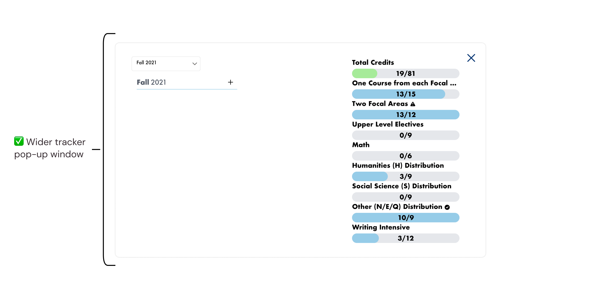

Improving advising for undergraduate degree plans
UCredit at JHU
UX Research • User Interviews

Timeline
February 2023 - April 2023(Four 2-week sprints)
Tools
Team
Sean P. (Project Manager) Astrid J. (UX Designer)
Carolyn T. (UX Designer)
Eric R. (UX Designer, Research Partner)
"How might we make reviewing an undergraduate degree plan easier for college advisors?"
CONTEXT OVERVIEW
UCredit is a four-year degree planning platform for undergraduate degree progress.
UCredit's main features include a planning dashboard and a reviewer dashboard.
From previous heuristic evaluation data, working on improving the reviewer dashboard was an important step for the platform's future.
MY ROLE
I worked with one partner on this project. Together, we created a research plan, recruited, conducted, and took notes for user interviews.
My own personal work included processing the interview research data after affinity diagramming to determine action items, as well as conducting
competitive research from various direct competitors.
INTERNAL RESEARCH DATA
As a user, I want...
"...to see if [degree] requirements are met."
"...ways to reconcile conflict... and communicate" with advisees.
By learning from the past user feedback in internal secondary research data,
we understood some of our target demographics that would potentially use the reviewer dashboard.
We needed to explore two major user groups:
Advisees
undergraduate students & individuals planning to and/or currently taking college courses for credit
Advisors
professors, teachers, & those that need to approve a degree roadmap and plan
OUR GOALS
We first wanted to understand how users were currently navigating the existing reviewer dashboard.
1. How were tasks accomplished in the reviewer dashboard by both students and advisors?
2. What is the usefulness of the feature?
3. Are there pain points that they may come across in navigating the dashboard?
To do this, we found it beneficial to conduct a competitive analysis to identify spaces that UCredit could expand upon as well as guided usability tests with user interviews to directly see how advisors are currently checking requirements and communicating with advisees.
2. What is the usefulness of the feature?
3. Are there pain points that they may come across in navigating the dashboard?
To do this, we found it beneficial to conduct a competitive analysis to identify spaces that UCredit could expand upon as well as guided usability tests with user interviews to directly see how advisors are currently checking requirements and communicating with advisees.
COMPETITIVE ANALYSIS
Similar platforms were optimized with tools for college advisors, but lacked a focus on peer-to-peer reviewing.
I created reports on two direct competitors on degree management tools, noting their features after attending two
live software demos from the companies.

Stellic
+ options to filter students using tags - no peer-to-peer reviewing options
- no reviewer dashboard specifically for advisors
Conclusive Degree Audit
+ simplified commenting options - no dashboard for reviewers to view all students
- difficult for advisors to communicate with advisees on the platform
USABILITY TESTING
I led two interview sessions and was primary notetaker for four other interviews.
We conducted these via Zoom with four students and three advisors.
We tailored 8-9 tasks for both groups to discover their process in navigating
the current features of the reviewer dashboard.

SUCCESS METRICS
During the study, we noted specific key performance indicators.
1. How long did it take for the user to finish a task?
2. How many users made an error?
3. How many users could complete the action?
2. How many users made an error?
3. How many users could complete the action?
Qualitative KPIS were gathered from any comments or feedback an interview participant made during the study.
What did they do? What did they feel? What did they say?
Post-study, we gathered each participant's consumer effort score (CES),
net promoter score (NPS), and scores on a system usability scale (SUS) by asking them to rate some statements on their
experience.
(CES) "The reviewer dashboard made it easy for me to communicate with my advisor/advisee."

(NPS) On a scale from 1 to 10, would you recommend this reviewer feature to someone else?

From the verbal feedback we received, not all interview participants seemed to be completely satisfied with the existing layout of the dashboard,
so we wanted to continue to learn how we might be able to improve the dashboard through our qualitative data.
AFFINITY DIAGRAMMING
After compiling the raw interview data, we organized our findings in an affinity diagram.

We organized common themes amongst participants, including pain points in navigation,
any bugs while accessing information, as well as any points where they had an intuitive experience
completing the tasks.
PATTERNS AND INSIGHTS
After competitive research and user interviews, I identified major insights from patterns and outlined
potential design solutions to work on.
Search Bar Functions
❌ The layout overview of the reviewee list was unintuitive for some users, without
filter options to more easily view or customize to find reviewers more easily.

Organization of Reviewees
❌ Reviewers were frustrated by the lack of features in organizing their
large number of students into groups, sections, or programs.

User Summary
❌ During research, users expressed issues regarding having separate plans from the same user.
Users were also consistently unable to accurately identify when changes or reviews have been made regarding
their plans.
❌ For some, viewing user summary information on the screen was difficult due to size.


LESSONS TO LEARN
Know the motivations in conducting user research methods.
I understand now from personal experience that interviews are a long and complex endeavor. It's good to be able to
explain to yourself and your stakeholders why it's worth spending time and effort on.
Be smart about organizing interviews.
The recruitment and interview process took over two 2-week sprints, which was longer than we had initially anticipated.
For future considerations, I know now to always request to interview more people than you expect.
Always justify design decisions!
During this project, my team encouraged me to make sure I back up any solutions I thought of with research. This is a
great skill for me to continue building and learn to move away from making isolated design choices that might not
be great for the users I'm designing for.
Be proactive about next steps.
Especially for a startup, it's crucial to know what the team should be able to improve next and make this kind of research
really count in the same way our secondary research really helped our process. My own possible next steps for my role on the
UCredit UX team include in-depth reviewer dashboard wireframing and prototyping, as well as focusing on the interaction
between students and trying to increase the collaboration and community of peers on the platform.